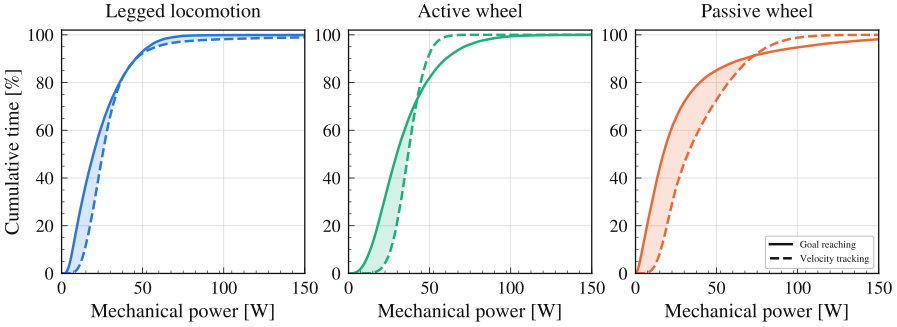
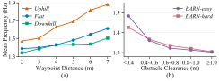
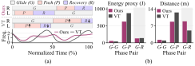
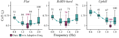

Passive-wheel quadrupedal robots offer energy-efficient locomotion through leg-driven
propulsion and momentum-driven gliding. However, navigation requires coordinating
steering with intermittent propulsion and adapting push–glide timing to task
demands. Velocity-tracking objectives may suppress the speed variations inherent in
skating, discouraging efficient gliding. To address these challenges, we propose
SkateNav, a unified skating-navigation framework based on reinforcement learning.
A time-budgeted goal-reaching objective allows the policy to jointly learn steering,
propulsion, and their temporal allocation. An adaptive skating cycle structures gliding,
pushing, and recovery, while frequency modulation at every control step adjusts phase
durations to navigation demands. Simulation experiments demonstrate higher average
success rates and lower cost of transport than the evaluated planner–controller
baselines, with ablations confirming the contributions of cycle structure and frequency
adaptation. Real-world experiments demonstrate zero-shot transfer from simulation to a
passive-wheel Mini Cheetah across cluttered indoor spaces, slopes, and paved outdoor
surfaces.
🎯
Problem formulation We formulate passive-wheel local navigation as a
time-budgeted goal-reaching problem in which steering, propulsion, and push–glide
timing are learned jointly.
🌀
Adaptive skating cycle We introduce an adaptive skating cycle representation
that preserves leg coordination while exposing phase progression as a
navigation-conditioned policy action.
📊
Evaluation We demonstrate higher average success rates and lower cost of
transport than the evaluated planner–controller baselines, conduct component
ablations, and validate real-world navigation across indoor and outdoor environments.
SkateNav for passive-wheel navigation in diverse environments. Our SkateNav
framework enables local navigation of a Mini Cheetah equipped with custom detachable
passive-wheel modules. Representative snapshots show the robot navigating toward the
goal through (a) gliding on passive wheels, (b) obstacle avoidance in a cluttered
passage, (c) heading adjustment, and (d, e) uphill and downhill slope traversal.
We use the existing foot as the non-rolling contact and attach a detachable passive-wheel
module. This configuration provides a mechanical basis for skating motion: foot-ground
contact generates propulsion, whereas wheel-ground contact provides low-resistance rolling.
Mechanical design and hardware implementation. (a) Overall design of the
quadruped robot equipped with passive-wheel modules. (b, c) Side and assembly
views of the foot and detachable passive-wheel module. (d) Hardware implementation, with
the blue and orange boxes indicating foot-ground and wheel-ground contact modes,
respectively.
Characteristic of passive-wheel system
Passive-wheel systems lack wheel-driven propulsion and therefore rely on intermittent
leg-driven pushes followed by gliding on the resulting momentum. A velocity-tracking
objective penalizes deviations from a prescribed instantaneous velocity and may therefore
discourage these variations, whereas a goal-reaching objective specifies a destination and
time budget, providing temporal flexibility, allowing the policy to adjust the velocity
profile to accommodate push–glide motion.

Each panel shows the cumulative distributions of instantaneous mechanical power for
policies trained with goal-reaching (solid) and velocity-tracking (dashed) objectives on
each platform, averaged over 100 trials. Both policies traverse 7 m in 7 s, with
a 1 m/s command for velocity tracking. Shading highlights the difference in the
low-power regime.
Policy architecture
Overview of the proposed SkateNav framework. A unified skating-navigation policy
uses a 2.5D elevation map, robot states, and navigation commands to generate joint
actions and a frequency action. The navigation commands specify the current and next
waypoints and the time remaining to reach the current waypoint. The frequency action
controls progression of the skating cycle, allowing phase durations to vary with
navigation demands.
Adaptive skating cycle
Human skating motion is characterized by the alternating roles of the left and right
legs. While one leg pushes against the ground for propulsion, the other maintains rolling
contact and glides on the resulting momentum. To realize this alternating pattern on a
quadruped, we synchronize the front and rear legs on each side and impose a half-cycle
phase offset between the left and right pairs.
(a) Each leg sequentially follows Glide, Push, and Recovery in the phase domain, with the
right and left leg pairs offset by half a cycle. (b) As the cycle progresses, the desired
contact configurations are defined: while the right-side legs remain in Glide, the
left-side legs transition through Glide, Push, and Recovery with wheel, foot, and no
contact, respectively.
With a fixed skating frequency, the predefined phase fractions result in a fixed temporal
allocation among Glide, Push, and Recovery. Such fixed timing cannot accommodate varying
navigation demands, such as more frequent Push phases to establish foot-ground contact for
rapid steering around obstacles or prolonged Glide phases when sufficient momentum is
available. To provide this gait-level flexibility, we allow the policy to modulate the
skating frequency at every control step according to the navigation context.
Results
Experimental Evaluation
Simulation · five conditions · 1000 navigation tasks per condition
93.3%
Average success rate
Average over the five conditions
0.559
Average CoT
Average over the five conditions, lower is better
0.28 ms
Inference time
Per decision step on an RTX 4090
(a) Flat. (b)–(c) BARN-easy and BARN-hard, with obstacle
layouts based on BARN configurations and mean clearances of 4.26 and 2.16 m,
respectively. (d) The 15° slope for Uphill and Downhill
conditions.
Navigation performance in simulation environments
Method
Flat
BARN-easy
BARN-hard
Uphill
Downhill
Average
IT [ms]
SR ↑
CoT ↓
SR ↑
CoT ↓
SR ↑
CoT ↓
SR ↑
CoT ↓
SR ↑
CoT ↓
SR ↑
CoT ↓
Ours
100.0
0.512
89.3
0.539
79.0
0.554
100.0
0.976
98.4
0.216
93.3
0.559
0.28
↳ w/o Adaptive Freq.
100.0
0.628
88.0
0.695
78.0
0.653
100.0
1.402
70.0
0.348
87.2
0.745
0.28
↳ w/o Skating Cycle
83.3
1.019
75.5
1.058
72.8
1.067
96.3
1.689
84.8
0.428
82.5
1.052
0.27
DWA+VT
100.0
0.608
73.1
0.657
55.5
0.683
99.8
1.046
97.7
0.341
85.2
0.667
0.42
MPPI+VT
93.4
0.606
77.4
0.650
70.9
0.664
86.9
1.093
94.1
0.282
84.5
0.659
1.31
CEM+VT
98.5
0.573
78.8
0.622
70.4
0.635
69.6
1.007
98.1
0.294
83.1
0.626
2.48
Best Second-best
results are highlighted within each comparison group, with Ours included in both. For
w/o Adaptive Freq., we report results at the fixed frequencies yielding the highest SR:
2.0 Hz (Flat/BARN-easy), 1.8 Hz (BARN-hard/Uphill),
and 1.2 Hz (Downhill). For planners, we select the best cost setting
(aggressive, balanced, or safe) by average SR: balanced for DWA; aggressive for MPPI and CEM.
Ours achieves the highest Success Rate (SR) and the lowest Cost of Transport (CoT) and
Inference Time (IT), outperforming the planner–VT baselines. For Flat, all
methods achieve high SR, whereas performance differences become more pronounced as
navigation demands increase.
Adaptive skating frequency
As the waypoint distance increases under the same time budget, the policy raises the
skating frequency, producing more frequent Push phases. This tendency is strongest on
Uphill, where repeated foot-ground contact provides traction for traversal,
whereas Downhill favors lower frequencies to exploit momentum gained during
descent. Furthermore, the skating frequency increases as obstacle clearance decreases in
the BARN settings, enabling rapid steering corrections.

Mean skating frequency collected (a) during the first segment of each navigation task
across waypoint distances and terrain conditions, and (b) grouped by observed obstacle
clearance from the robot center.
Simulation · Uphill / Flat / Downhill (+15° / 0° / −15°) 6 segments · 2 → 3 → 4 → 5 → 6 → 7 m per segment · 3.5 s time budget per segment · played at 1.5× speed
Simulation · obstacle avoidance (BARN-easy) 2 segments · 4 m per segment · 3.5 s time budget per segment · shown interval 1.06–3.50 s · played at half speed
Temporal allocation of pushing and gliding
VT allocates more of each cycle to Glide–Push and less to
Glide–Recovery than Ours, possibly to track the commanded velocity. In
contrast, Ours travels comparable distances during G-P and G-R while
consuming less energy in G-R than in G-P. This temporal redistribution
toward momentum-driven motion supports the consistently lower CoT of Ours compared with
the planner–VT baselines.

Each task comprises four 5 m, 3.5 s segments, with MPPI+VT commanding
≈1.4 m/s on average. (a) Phase durations and skating frequency over normalized
cycle time. R/L denote right/left leg pairs; ↑/↓ indicate longer/shorter VT
phase durations than Ours. (b) Energy proxy and traveled distance accumulated within
each phase pair over the evaluation.
Skating cycle component ablation
The skating frequency required for favorable performance varies with navigation demand.
Uphill requires sufficiently high frequencies for reliable navigation, whereas
higher frequencies can raise CoT on Flat and BARN-hard. Thus, a single
fixed frequency may not achieve both high SR and low CoT across varying navigation demands.
Ours vs. w/o Skating Cycle · Flat-surface navigation
2 segments · 3.5 m per segment · 3.5 s time budget per segment
Ours SR 100.0 % · CoT 0.512
w/o Skating Cycle SR 83.3 % · CoT 1.019
Ours vs. w/o Skating Cycle · Uphill navigation (15° slope)
2 segments · 3.5 m per segment · 3.5 s time budget per segment
Ours SR 100.0 % · CoT 0.976
w/o Skating Cycle SR 96.3 % · CoT 1.689
Ours vs. w/o Adaptive Freq. · Flat-surface navigation, increasing segment distance
3 segments · 5 → 6 → 7 m per segment · 3.5 s time budget per segment
Ours Adaptive skating frequency, mean 1.58 Hz
w/o Adaptive Freq. Fixed 0.8 Hz · fails to reach the last waypoint within the time budget

Frequency sweep across representative conditions. Green boxes show CoT distributions for
w/o Adaptive Freq. at selected fixed frequencies; lines show medians across the sweep.
Magenta boxes show Ours at its mean skating frequency. Numbers above boxes indicate
SR (%).
Without the skating cycle, the goal-reaching objective alone may struggle to discover an
energy-efficient skating pattern. w/o Skating Cycle yields lower SR and
substantially higher CoT across all environments, because the learned motion involves
sustained wheel–ground contact accompanied by persistent slip.
Real World
Real-World Experiments
Zero-shot transfer from simulation to a passive-wheel Mini Cheetah
A representative indoor navigation scenario runs along an approximately 57 m route
through open and curved areas, cluttered passages, and a downhill section, with 13
commanded waypoints placed 2.5–5.5 m apart. SkateNav successfully guided the
robot to the final goal within the total time budget of 45.5 s, allocated as
3.5 s per waypoint.
0.7 m/stight corner
0.9–1.2 m/sbetween obstacles
1.9 m/sdownhill
2.4 m/speak
Real-world navigation example using a passive-wheel quadruped robot. The
point-cloud map in the middle row shows the robot trajectory colored by body velocity.
Markers A–F indicate selected locations along the route. The top row shows the
robot at each location, and the bottom row shows the corresponding local elevation map
provided to the policy, with green and yellow spheres indicating the current and next
waypoints, respectively.
Indoor · uphill traversal
Indoor · open lobby
Outdoor · paved road
Outdoor · parking lot
Limitation. The current framework relies on externally specified waypoints and
time budgets, which do not explicitly account for the robot’s terrain-dependent
skating capability. As future work, we plan to integrate a high-level planner that jointly
selects waypoint spacing and time budgets according to terrain conditions.
Citation
BibTeX
Venue will be filled in on publication
@inproceedings{skatenav,
title = {{SkateNav}: Learning Energy-Efficient Navigation through
Adaptive Skating on Passive-Wheel Quadrupedal Robots},
author = {Jeong, Jeil and Kim, Taeyun and Kim, Sangjin and Choi, Jinyoung and Yoon, Sung-Eui},
booktitle = {TBD},
year = {TBD}
}